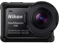

器材库 > 不可换镜头数码相机 > 钥动 KeyMission 170

规格总览
发布日期
2016-09-19
防水
是
影像规格
影像传感器
CMOS
影像传感器尺寸
1/2.3英寸
总像素
1271万
有效像素
829万
静态图像格式
JPEG
静态图像尺寸
3840×2160
短片格式
MPEG4-AVC/H.264
短片尺寸
[NTSC] 2160/30p, 1080/30p, 1080/60p, 1080/120p, 720/240p[PAL] 2160/25p, 1080/25p, 1080/50p, 1080/100p, 720/200p
音频格式
AAC立体声
防抖系统
电子VR减震（动画）
镜头和对焦
镜头结构
7片/5组
焦距
2.4mm
等效35mm画幅焦距
15mm
最大光圈
f/2.8
最近对焦距离
40cm
曝光控制
测光模式
矩阵测光
曝光模式
程序自动曝光
快门速度
1/16000至1/2s
曝光补偿
±2EV以1/3EV级调整
ISO感光度
ISO 100至1600
取景规格
LCD类型
彩色TFT LCD
LCD尺寸
1.5英寸
LCD像素
约34.5万
视野率
拍摄模式约97%，播放模式约99%
文件输入/输出
存储卡
microSD, microSDHC, microSDXC
数据接口
高速USB, 微型USB
视频/音频接口
D型HDMI接口
无线功能
Wi-Fi, 蓝牙
配件端口
脚架螺丝孔
电源
电池
一块EN-EL12 锂离子电池组
续航能力
静态图像：可拍摄约250张视频：可拍摄约60分钟
外接电源
电源适配器EH-62F (另购)
外观
颜色
黑色
尺寸
66.4×46.8×42.7mm
重量
包括保护镜、电池和存储卡约134.5g
其它
支持语言
中文（简体）, 中文（繁体）, 英语, 日语, 荷兰语, 法语, 德语, 意大利语, 韩语, 俄语, 西班牙语
工作温度
-10 ~ +40℃
工作湿度
不高于85%
附件
锂离子电池组EN-EL12，照相机充电电源适配器EH-73P，USB线UC-E21，遥控器ML-L6，遥控器电池 (3V CR2032锂电池)，相机固定支架适配器 AA-1B，相机固定支架底座（平面）AA-2，相机固定支架底座（曲面）AA-3，保护镜AA-14B，水下保护镜 AA-15B
软件
钥动KeyMission 360/170应用软件（用于电脑）尼享SnapBridge 360/170智能设备应用程序（用于智能设备）
备注
防水、防尘、防震
该产品暂无存档的网友点评
产品图 / 样片
KeyMission 170